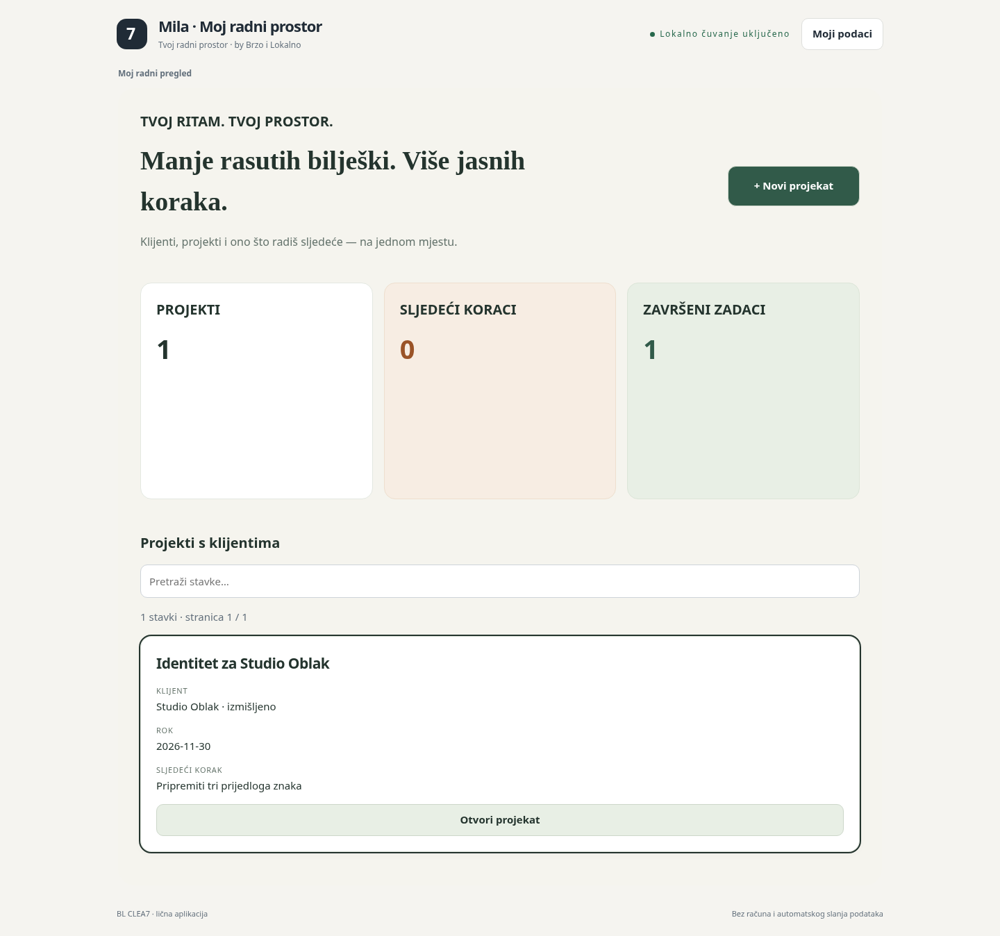

Dodaj ono što radiš.
Projekat, klijent, rok i sljedeći zadatak. Uredi kad se plan promijeni.
Aplikacija s tvojim imenom, oblikovana oko tvog radnog dana. Prostor za klijente, projekte i jedan jasan sljedeći korak.
Besplatna tehnička proba. Bez računa, AI servera i automatskog slanja podataka.

Projekat, klijent, rok i sljedeći zadatak. Uredi kad se plan promijeni.
Završi ili ponovo otvori zadatak. Pregled se osvježava iz stvarnih zapisa.
Zapis ostaje poslije zatvaranja preglednika. Dvije kopije čuvaju odvojene podatke.
Ovo je originalna vizuelna osnova za zajedničku doradu. U Studiju promijeni ime, boje i raspored. Projekti, podaci i provjerena BIL logika ostaju povezani.
Podaci su lokalni u istom pregledniku i profilu. U meniju „Moji podaci“ preuzmi kopiju prije brisanja podataka preglednika ili promjene adrese. Ova proba nema zajedničku timsku bazu.